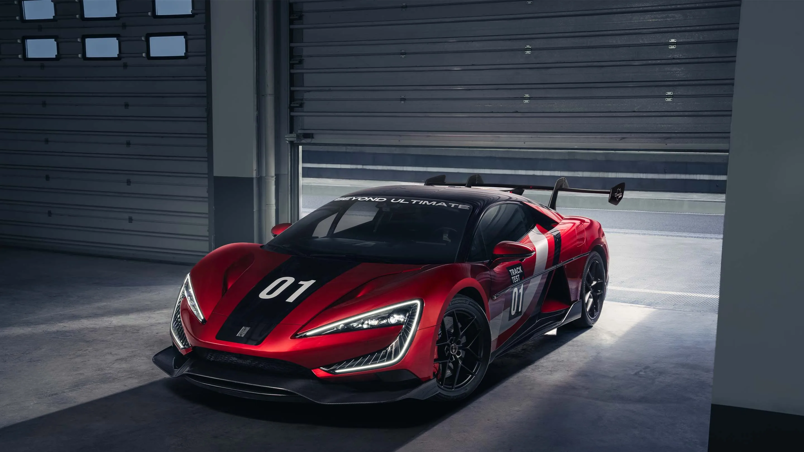
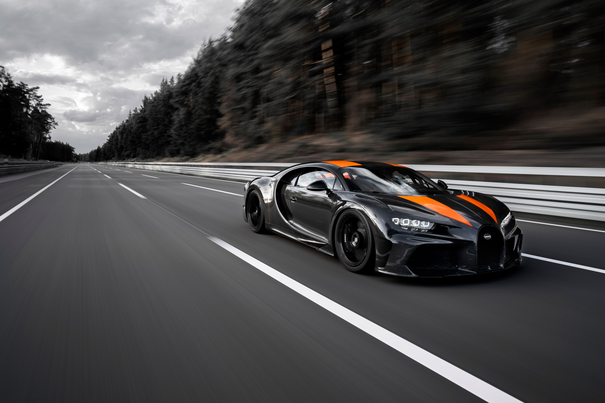
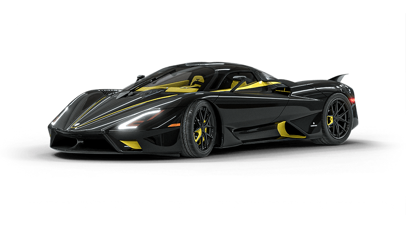
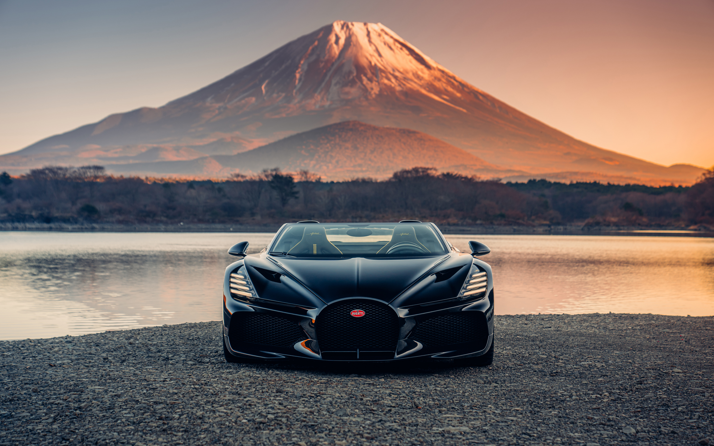
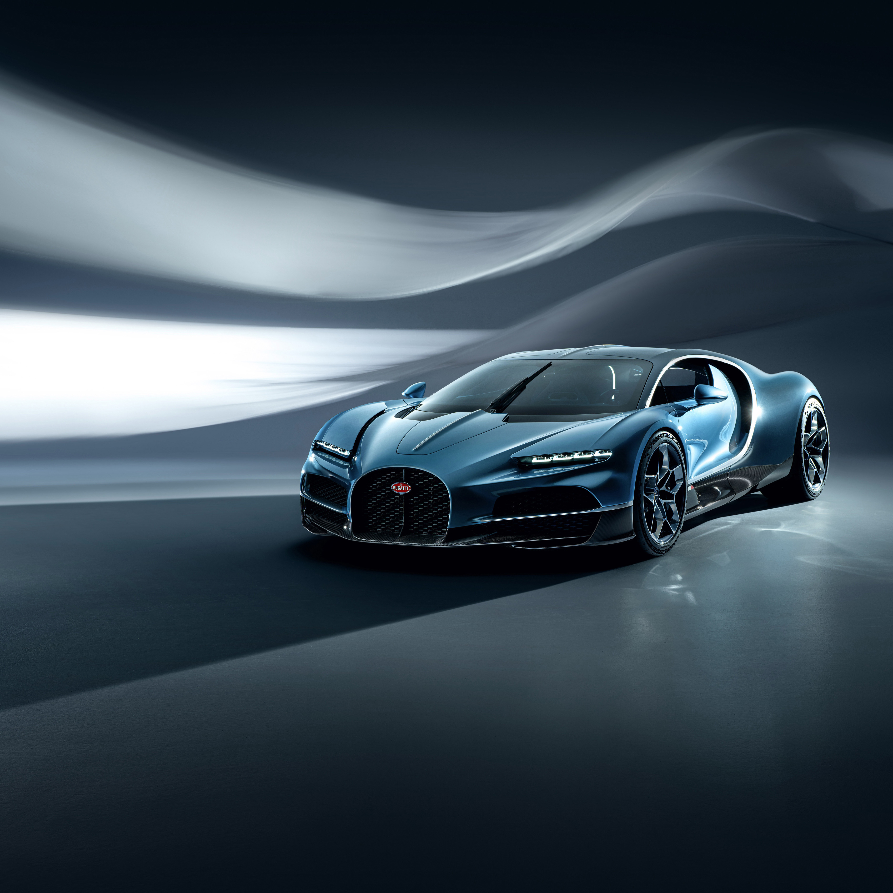
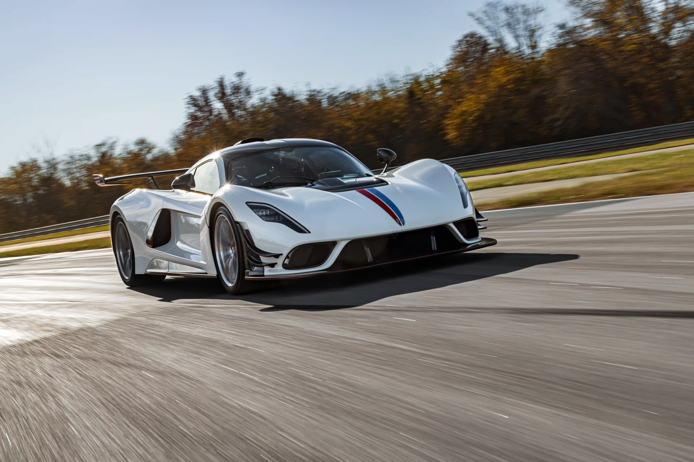
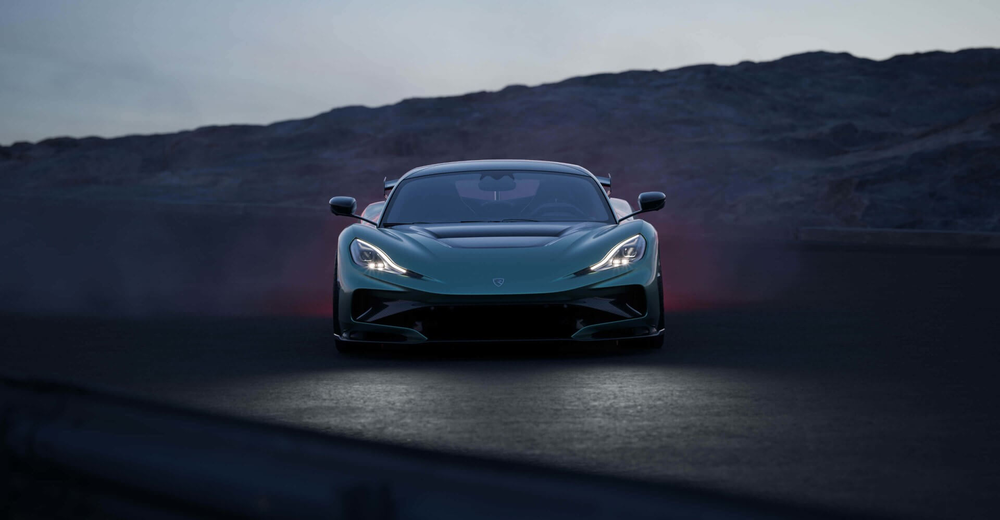
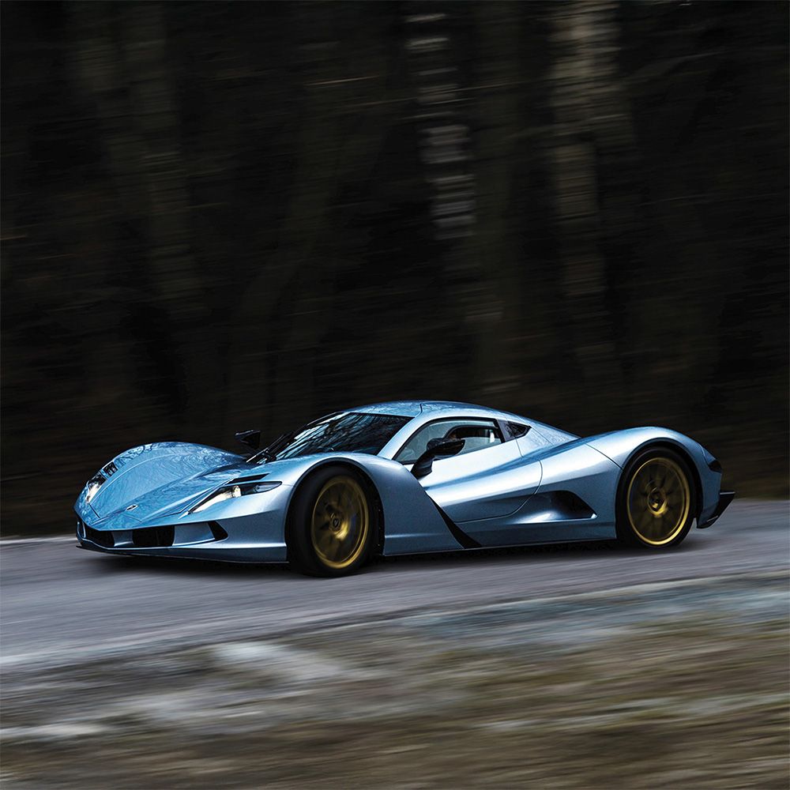
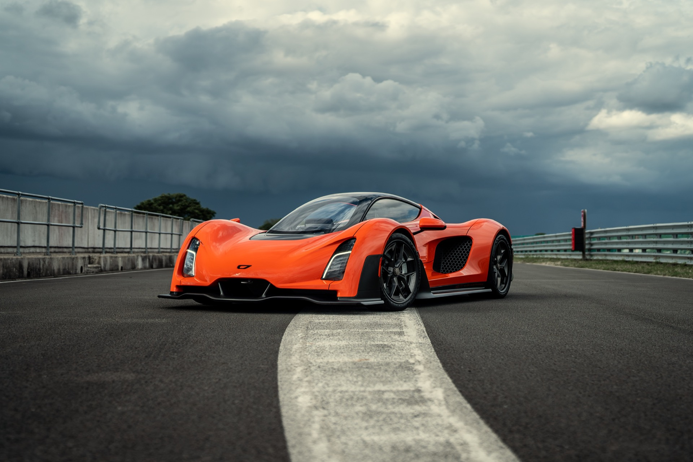

Discover the pure numbers defining ultimate speed
1. Koenigsegg Jesko Absolut

- A Swedish low-drag hypercar stripped of rear wings and elongated by 85 mm to maximize high-speed tracking and target straight-line world records.
⇒ Holds the world acceleration/deceleration record of 0–400–0 km/h in 25.21 seconds
⇒ Features a revolutionary 9-speed, multi-clutch Light Speed Transmission.
2. Yangwang U9 Extreme

- BYD's ultra-luxury electric hypercar flagship designed around a specialized high-voltage architecture to capture global EV speed benchmarks.
⇒ Certified 496.22 km/h run at the Papenburg track makes it an official production speed milestone.
⇒ Features an immense 3,000 hp quad-motor setup backed by a 1,200-volt platform.
3. Bugatti Chiron Super Sport 300+

- The longtail variant of the legendary W16 platform constructed to cross the historic 300 mph boundary.
⇒ Proven real-world record run of 490.48 km/h.
⇒ Legendary W16 refinement offers unparalleled, luxurious high-speed cruising stability.
4. SSC Tuatara

- An American carbon-fibre speed machine designed with jet-fighter aerodynamics to claim pure top speed benchmarks.
⇒ Reached a verified twin-direction top speed average of 475 km/h.
⇒ Massive 1,750 hp delivery when fueled on E85 ethanol.
5. Bugatti W16 Mistral

- An ultra-exclusive open-top roadster serving as the grand finale for Bugatti's iconic quad-turbocharged W16 engine.
⇒ The absolute fastest convertible on Earth, clocking 453.9 km/h.
⇒ Highly collectible investment asset holding guaranteed automotive historical value.
6. Bugatti Tourbillon

- Bugatti's modern plug-in hybrid successor, swapping the W16 for a high-revving naturally aspirated V16 and three electric motors.
⇒ Combines a blistering 445 km/h top speed with a 60 km pure EV urban driving range.
⇒ Breathtaking interior featuring transparent analog instruments crafted by Swiss watchmakers.
7. Hennessey Venom F5

- A bespoke American hypercar pairing an old-school, large-displacement twin-turbo V8 engine with an ultra-light carbon monocoque shell.
⇒ Aggressive 1,817 hp "Fury" V8 delivers an immense power-to-weight layout.
⇒ Extreme analog thrill with rear-wheel drive pushing a lightweight 1,360 kg frame.
8. Rimac Nevera R

- A track-focused, lightened evolution of the standard Nevera, emphasizing downforce, cornering agility, and revised thermal management.
⇒ Serves as the ultimate acceleration benchmark with a 1.72-second 0–100 km/h sprint.
⇒ Advanced quad-motor torque vectoring adjusts power to individual wheels 100 times per second.
9. Aspark Owl

- A low-slung, full-electric hypercar hailing from Japan, prioritizing a low centre of gravity and neck-snapping initial acceleration.
⇒ 413 km/h top speed places it securely ahead of standard commercial EVs.
⇒ Carbon fiber body panels keep the chassis incredibly low to the ground for downforce.
10. Czinger 21C V Max

- An innovative American hypercar featuring an inline tandem (jet-fighter style) seating configuration, constructed via AI design and 3D-printed components.
⇒ Low-drag variant hits 407 km/h via an ultra-high-revving 2.88L V8 hybrid platform.
⇒ Revolutionary manufacturing process yields an extremely rigid, featherweight structure.
| Hypercar | Powertrain Type | Peak Power (hp) | Verified / Claimed Top Speed | 0–100 km/h Sprint | |||||||||||||||||||||
|---|---|---|---|---|---|---|---|---|---|---|---|---|---|---|---|---|---|---|---|---|---|---|---|---|---|
| Koenigsegg Jesko Absolut | Twin-Turbo V8 (Gas/E85) | 1,600 hp | 531 km/h (Theoretical) | ~2.5 seconds | |||||||||||||||||||||
| Yangwang U9 Extreme | Quad-Motor Electric | 3,000 hp | 496.22 km/h (Recorded) | ~2.0 seconds | |||||||||||||||||||||
| Bugatti Chiron Super Sport 300+ | Quad-Turbo W16 (Gas) | 1,600 hp | 490.48 km/hkm/h] (Recorded) | 2.2 seconds | |||||||||||||||||||||
| SSC Tuatara | Twin-Turbo V8 (Gas/E85) | 1,750 hp | 475 km/h (Recorded) | 2.6 seconds | |||||||||||||||||||||
| Bugatti W16 Mistral | Quad-Turbo W16 (Gas) | 1,600 hp | 453.9 km/h (Recorded) | 2.4 seconds | |||||||||||||||||||||
| Bugatti Tourbillon | Naturally Aspirated V16 Hybrid | 1,800 hp | 445 km/h (Claimed) | <2.0 seconds | |||||||||||||||||||||
| Hennessey Venom F5 | Twin-Turbo V8 (Gas) | 1,817 hp | 438 km/h (Recorded) | 2.6 seconds | |||||||||||||||||||||
| Rimac Nevera R | Quad-Motor Electric | 2,078 hp | 431.45 km/h (Recorded) | 1.72 seconds | |||||||||||||||||||||
| Aspark Owl | Quad-Motor Electric | 1,984 hp | 413 km/h (Recorded) | 1.75 seconds | |||||||||||||||||||||
| CZinger 21C V Max | Twin-Turbo V8 Hybrid | 1,350 hp | 407 km/h (Claimed) | 1.9 seconds | |||||||||||||||||||||